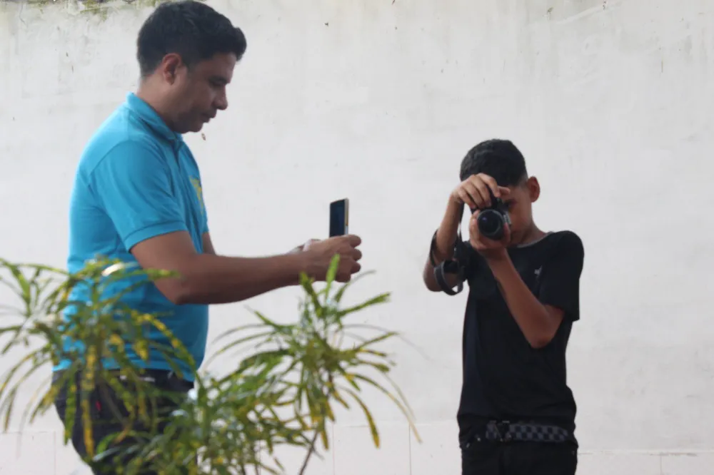
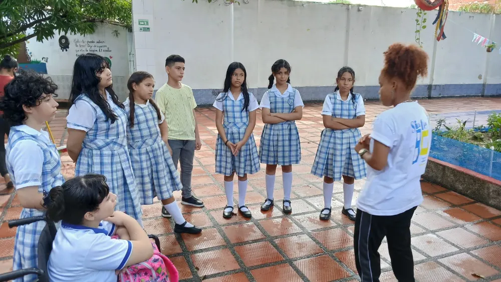
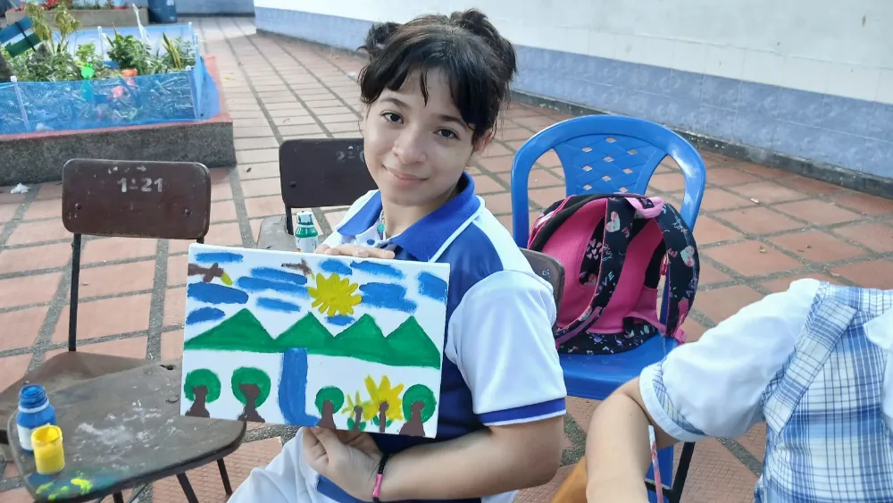
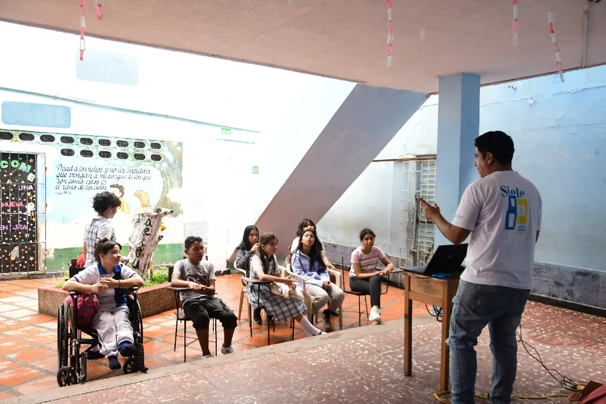
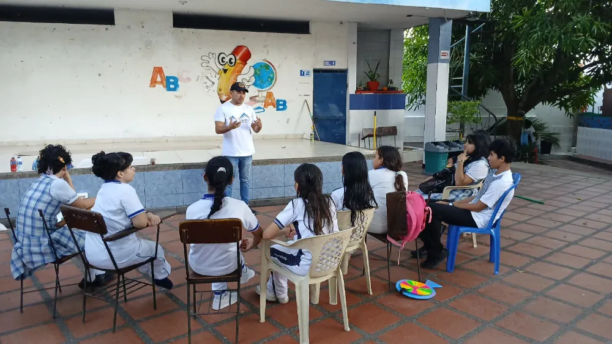
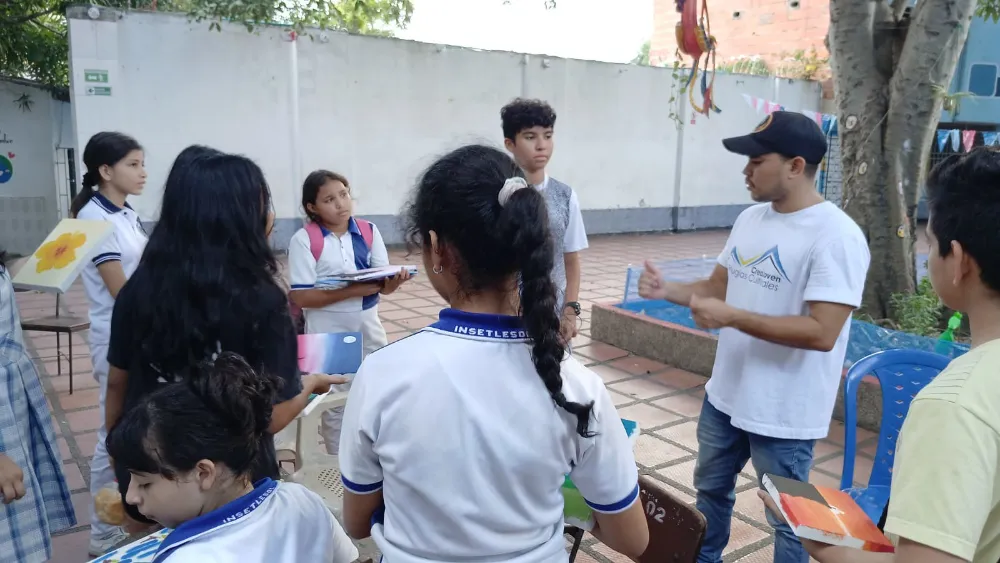

#ParchesCulturales
Laboratorios de música, dibujo, pintura y creación audiovisual, en los que las y los participantes exploran sus talentos y desarrollan producciones artísticas colectivas.
Juventudes · Arte urbano · Comunicación · Participación
Refugios Culturales es una iniciativa que promueve la participación, la expresión artística y el protagonismo de adolescentes y jóvenes en contextos comunitarios. A través del arte urbano, la cultura, la comunicación y la apropiación del espacio público, propicia entornos de encuentro, creación y convivencia.
La iniciativa articula diferentes experiencias de trabajo comunitario.
Laboratorios de música, dibujo, pintura y creación audiovisual, en los que las y los participantes exploran sus talentos y desarrollan producciones artísticas colectivas.
Espacios de sensibilización y diálogo sobre prevención de las violencias de género, la trata de personas, la xenofobia y la promoción de una cultura de paz.
Experiencias de formación en fotografía, producción audiovisual y comunicación comunitaria, para que las juventudes narren sus realidades desde sus propias voces.
Encuentros comunitarios que integran cineforos, teatro, circo, música, exposiciones y actividades recreativas.
Su primera implementación se desarrolló durante cinco meses, con el apoyo del Ministerio de las Culturas, las Artes y los Saberes, a través del Programa Nacional de Concertación Cultural.
Nuevamente con el apoyo del Ministerio de las Culturas, las Artes y los Saberes, con financiación de su Programa Nacional de Concertación Cultural, la iniciativa llegó a nuevas comunidades.
Su desarrollo ha contado con la articulación de organizaciones de base comunitaria, colectivos y actores institucionales.
 Mujeres Empoderadas del Golfo
Mujeres Empoderadas del Golfo
 Colectivo Machis Entrelazadas
Colectivo Machis Entrelazadas
 Corporación Sembrando Saberes para la Paz
Corporación Sembrando Saberes para la Paz
 Fundación Sueños de Amor
Fundación Sueños de Amor
 Fundación El Pozo de la Felicidad
Fundación El Pozo de la Felicidad
 Colectivo Juventud Positiva
Colectivo Juventud Positiva
 Centro Intégrate Barranquilla
Centro Intégrate Barranquilla
 Alcaldía de Soledad
Alcaldía de Soledad
Parches de fotografía, comunicaciones, danza y artes plásticas donde las voces juveniles toman forma.
Video · Refugios Culturales Cuando las juventudes crean, sus voces se convierten en música









Trabajamos junto a niñas, niños, adolescentes, jóvenes, familias y comunidades para promover la protección de derechos, prevenir las violencias, fortalecer la participación y favorecer la integración sociocultural. Desarrollamos experiencias de formación artística, creación colectiva, comunicación comunitaria y encuentro ciudadano, adaptadas a las características y necesidades de cada territorio.